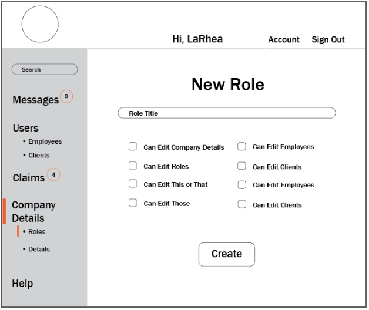
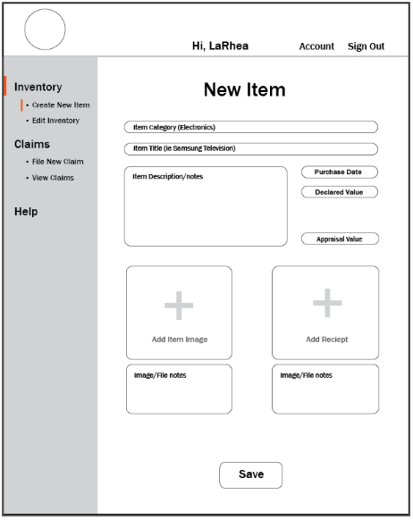

Mr. Greenwell is looking for a better way of understanding, documenting and manipulating the company’s liabilities stemming from the home insurance and renter’s insurance marketplaces. Due to the nature of these types of insurance, specific values on each policy’s liability are often times not declared until there is a loss event. In response to this need, we are creating an app that allows users to inventory and declare the values of items contained within their home.
The/This app
APPNAME is the app being created for Greenwell bank and described with this specification. It will be referenced throughout this specification as ‘The/This App’.
Policyholders
Clients of Greenwell Bank that will be using the applications client-side interface to use the app for all of its user-end purposes such as uploading inventory and submitting claims.
Employees
Refers to employees of Greenwell Bank’s insurance department that will be using this app to view and export clients data as well as view, export, or update claims made by policyholders through the app.
Users
‘Users’ references both policyholders and employees as a unit of someone in general using this app.
Data - Any information a policy holder submits to the app.
This app will allow for users to upload pictures of an item they are declaring, as well as images of receipts establishing the item’s value, the manufacturer's nameplate, etc. Manual entry of data will be used to complete the information fields with photos supporting the documentation. Once an inventory is established, users will be able to submit claims by selecting which items from their established inventory were damaged in the loss event. Benefits to the user of this app include having a record of their possessions and the ease of which claims can be submitted. Those benefits, coupled with the driving of traffic to the service when policies are purchased, will produce a high level of participation in the inventory service by your policyholders.
The benefits to the company go well beyond providing a service to your policy holders. Among them is the ability to establish a value on the items you insure prior to a loss, expediting the claim processing end of things and building goodwill with customers for the expeditious claims handling. More important to the insurance division however are having a declared value on these policies, the ability to quantify outstanding liability amounts, search and manipulate the data and apply demographic filters once a full database tie-in is implemented. In essence, the data collected from all of this liability declaration, when used in conjunction with policyholder info you already have, will allow for comprehensive understanding of the levels of liability of a given demographic, a given category of consumer goods, and much more.
Combined total of users expected to be using this reflects the number of policyholders with Greenwell Bank as well as the number of employees that will be working with this app to update claims and export data from this application. This number could range between 250 and 500 total users.
We expect to see a typical maximum of 50 users on our system at any one time but could experience several times that if a large scale catastrophic event hit an area you have a large market share in.
Will include every claims processor for the two marketplaces discussed, having all day connections. We would also expect more periodic usages from the appraisal and underwriting departments. There would be additional traffic from the admin side of things for setting up employee profiles, managing users, and running reports but these items should be fairly negligible in the overall traffic of the site.
Greenwell bank may require multiple roles for their employees. To provide flexibility to the company and it’s employees, a role designer has been created specifically for the instance that different employees will have different functions and permissions.
The default login given to the bank takes the role of ‘Super User’ which has permissions for all actions. The Super User can then use the Role Designer to create employee roles and choose which of these functions the new role will have permissions for.
For example, Mr. Greenwell wants Sally the Claims Adjuster to be able to view client data, view claims, export data, and update claim status’. In this case, he uses the role designer to create a role called “Claims Adjuster”. He hires Tamothy as a new Claims Adjuster at Greenwell Bank, however he does not want him to be able to update claim status’ that was defined in the role “Claims Adjuster” created for Sally. In this case he might create a new role called “Claims Viewer” or maybe “Claims Adjuster Read-only”.
 Super Users may create roles based on these options:Clients who have bought insurance through Greenwell bank will be provided complimentary access to APPNAME. The user will use the application to declare values on their valuables should anything happen to them such as a flood or theft. The users will upload descriptions and images or files of their valuables in a user-friendly interface. Each item the user inserts will include a detailed description and anfile gallery if the user should be able to provide images of the item, or file uploads of the receipt, etc.
Here, Bruce is inserting his item. He will be able to insert:
After going through the piles and piles of wedding gifts and assembling a list of items to insure, Regina and Isaac have decided to create an account with our application. As Regina begins filling out the ‘Account Information,’ she notices that the next step will involve ‘Insurance and Policy’ information, so she asks Isaac to go grab those documents. After filling out the standard email, password, name and address info she is ready to go onto the next step. Isaac is still sitting on the couch eating chips and salsa and watching a football game, being less than helpful with getting that insurance information. She notices that there is an option to skip this section and fill it out later, she considered skipping it, but Isaac was able to put the chips down and bring Regina the insurance info. All the information needed was the name of the Insurance company and the policy number(s). The Welshes don’t have insurance with any additional companies, so they are on to the last simple step. Verification. Regina signs into her registered email address and opens the email to read the verification code, a quick copy and paste into the form and - finished. The Welshes are all ready to start creating their inventory!
Randy finally found the receipt for those Bose speakers he insured with Greenwell, and he’s ready to upload a picture of it in his online inventory. Randy logs in using his email and password, unfortunately, his password seems to have been wrong. After three tries Randy is prompted with a suggestion to reset his password. All he has to do is log into his registered email and click the ‘reset password’ link through that email.
After a simple click, Randy’s password has now been reset to his new desired password. He logs in with the email address and his new password and uploads his receipt to his inventory.
Regina wants to add her new MSI gaming laptop to the insurance inventory. After she logs in she clicks on the ‘Create New Item’ in the left hand dashboard, under ‘Inventory.’ She is greeted with a simple form. Item category - Electronics, item title - MSI Gaming Laptop, purchase date - 4/24/2015, declared value - $1300, appraisal value - undetermined yet.
She sees that she is able to attach multiple files and images, and asks Isaac to grab the reciept for her new laptop, still in the bag on the table next to the chips and salsa where Isaac is sitting. He wipes his hands and grabs the receipt. Regina takes a quick picture of it and uploads it to her inventory. Then they are able to happily throw it away with no worries, and no paper trail. Isaac uses it to wipe salsa off of his shirt. She goes nuts with taking pictures of her new laptop as well as the office she keeps it in, and feels confident that if anything should ever happen, she has more than enough documentation, and it took no time at all!
Security is very important for Greenwell Bank and we have designed the app with that in mind. Policyholders will be required to log in with a email and password before having access to the system. Once they have been verified they will be required to link to a valid Greenwell insurance policy before their completed inventory can be submitted for appraisal or claims could be submitted.
Employees will sign in using their company email. Employees will have defined roles, as set by the “Super User” account, in our example it’s Sally Stone. Each defined role will have a limited set of permissions that allows the company to control access levels within the app. The Super User account is also allowed to add specific additional permissions to a single employee as required by individual job requirements.
For example, Bruce is a claims adjuster at Greenwell Bank’s insurance division. Bruce has no need to adjust appraised values of items as part of his job duties and as such would not have access to those features when he signs in. Instead, Bruce will see a dashboard that has policies assigned to him and their given status in the approval process.
No data will be passed in the URL’s, session variables will be used instead.
SSL will not be required for this app, passwords will be hashed before being sent to the server.
This app was developed using the most current versions PHP, MySQL, Javascript, jQuery, HTML5 and CSS.
Collaboration will be achieved using Github. View the Repository.
Based on most recent user statistics, the majority of Greenwells Bank app visitors use Chrome browser, and mobile devices. Based on this information, we will be testing our app across phones and tablets as well as desktop across Chrome, Firefox, and IE11.
AppName follows interface guidelines structured by Greenwell Bank, with an exeption of the navigation placement as approved by Mr. Greenwell upon wireframe presentation.